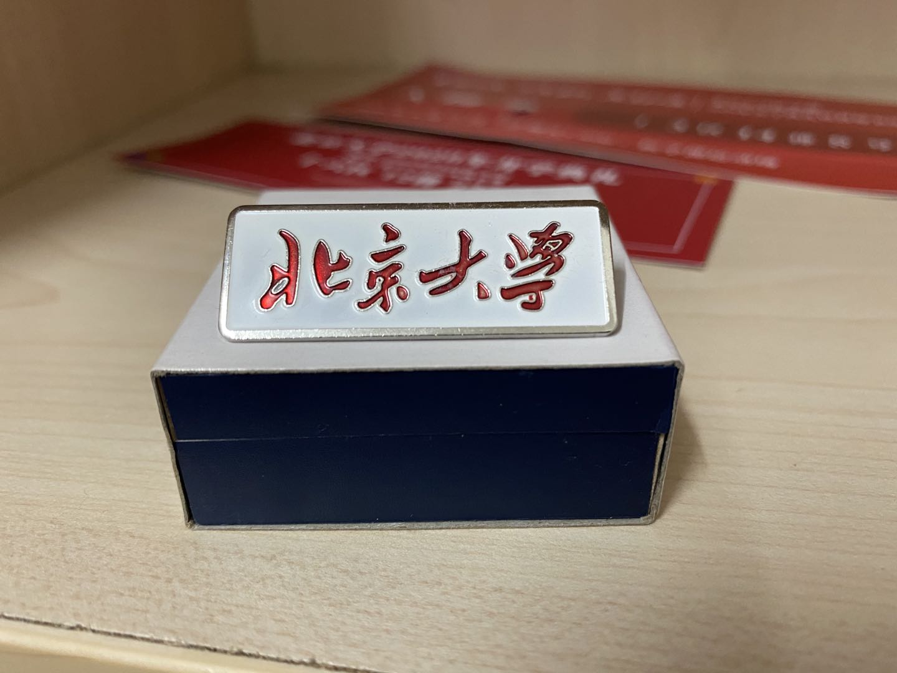

| 年级：大一 | 专业：药学 |
| 年龄：18 | 爱好：长跑，足球，阅读，视频剪辑 |
| 自我简介：本人性格开朗，爱好与别人交往，喜欢体育锻炼 |
在北大，你能够享受到丰富多彩的校园生活。数量很多的精品学生社团，百年大讲堂中高水平的学术讲座帮助我们在课余时间提高自己，增长见识；百年红楼，亮灯的博雅塔，宁静的未名湖，这些都是学子们在闲暇时间的的好去处。你可以在百讲中享受优质电影，可以在静园欣赏草坪音乐会......总之，北大的学习生活是充满乐趣的。
点此查看我在北大上课的第一天 药学是连接健康科学和化学科学的医疗保健行业，它承担着确保药品的安全和有效使用的职责。 药学主要研究药物的来源、炮制、性状、作用、分析、鉴定、调配、生产、保管和寻找（包括合成）新药等。主要任务是不断提供更有效的药物和提高药物质量，保证用药安全，使病患得以以伤害最小，效益最大的方式治疗或治愈疾病。